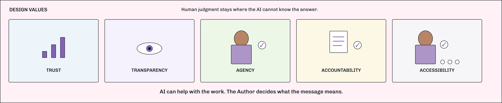

BCI speech-to-image communication flow — a human–AI collaborative workflow for expressive communication. Jules Sherman, UC Irvine MHCID, August 2026. Eight sheets.
BCI speech-to-image communication flow
A Human–AI collaborative workflow for expressive communication
The idea
A speech BCI decodes intended words. AI turns those words into image options. The person decides what represents them, approves what is shared, and remains the author of the message.
From one interaction to a collaborative system
Assignment 3 explored one interaction: a person using a speech BCI turns decoded speech into an image to express a thought, feeling, or memory. Assignment 4 zooms out. The question is no longer only “Can the AI make an image?” but “How should people and AI share the work of creating, approving, sending, and learning from that image over time?”
![Hand-drawn storyboard of six panels numbered 00 to 05 that tells the whole project as a sequence. Panel 00 is the title page, ‘BCI Speech-to-Image Communication Flow — a human-AI collaborative workflow for expressive communication’, drawn as an author in a wheelchair wearing a BCI headset picturing a lake, a friendly robot holding up four candidate images, and two people receiving them, under the question ‘What do you want to convey?’. Panel 01, Context and shared goal, sorts the participants into three boxes — the author (uses a speech BCI, reviews and approves what best represents their meaning, always in control), the AI system (decodes intended speech, generates candidate images, does not decide meaning), and people in the loop (caregiver, SLP or family who give feedback, help interpret context and respect the author’s intent) — and closes on a starred shared goal: enable clear, authentic expression while preserving dignity, agency and human connection. Panel 02, Collaborative workflow, is the part only the picture carries: six steps run left to right — 1 intent from author, 2 decode intended speech, 3 generate image options, 4 review and approval, 5 choose recipient, 6 share with recipient — drawn as a speech bubble saying ‘I want to share a memory of the lake’, a monitor showing a neural waveform, a grid of four generated landscapes, the author approving one, a contact picker listing Mom, Dad, Sister, Best Friend and SLP Maria with Dad selected, and a phone showing the sent image; a dashed ‘refine and try again’ loop runs from the last step back to the first, so the author can restart at any time. Panel 03, Participants and roles, is a six-column chart — author (BCI user), caregiver, SLP, family member, AI system and recipient — each with a portrait, a list of responsibilities, and a one-line summary of the role. Panel 04, Design values, pairs four icons with 1 trust, 2 transparency, 3 agency, and 4 accountability and accessibility, ending on the banner ‘AI assists. Humans decide. Together we communicate.’ Panel 05, Stakeholder feedback, holds four cards: caregivers, SLPs, family members and users provide feedback; real-world use informs refinements; co-design ensures the system meets people’s needs; continuous feedback creates better communication for everyone. Much of this wording is repeated as text on the sheets that follow; what the drawing adds is the numbered narrative order and the visual chain of the six workflow steps with its refinement loop.](assets/fig/fig-01-storyboard-v2.webp)
The shared goal
Help the person communicate meaning with less effort while keeping authorship, choice, and accountability with the person whose speech is being represented.
- AI should do
- Decode signals, generate image options, route approved messages, and keep a clear record of what happened.
- Humans must do
- Decide what the message means, whether it represents the person, who may receive it, and when settings should change.
- Core rule
- AI may propose and assist, but it may never decide what the person means or speak in the person’s name.
What changes from Assignment 3: the interaction becomes a workflow with explicit roles, an authorship gate before anything is sent, recipient feedback, and a periodic review loop. This follows guidance to make AI capabilities visible and preserve user control over consequential actions (Amershi et al., 2019; Sankaran et al., 2023).
Who participates, and what each one is responsible for
The collaboration includes people and several narrow AI roles. Each role has a limited job so responsibility is visible instead of disappearing inside one “smart” system.
Human participants
- Author / person using the BCI
- Starts the message, reviews image options, decides whether an image represents them, approves it, and chooses who may receive it.
- Proxy / only when invited
- May help compose when the Author defers. Proxy-created output is permanently labeled and can never be approved as the Author’s own speech.
- Recipients
- Receive only what the Author has allowed. They can acknowledge receipt or ask to see the decoded words behind an image.
- Speech-language pathologist + review partner
- Help review vocabulary, communication preferences, and drift over time. They advise; they do not speak for the Author.
AI system roles
- Decoder
- Turns the neural signal into candidate words and shows confidence. It translates; it does not decide the meaning.
- Composer
- Turns approved words or descriptors into several image options. It can regenerate, but it cannot send.
- Router
- Delivers an approved image only to recipients the Author has already allowed.
- Record keeper / drift reporter
- Records which inputs, agents, approvals, and recipients were involved, then summarizes repeated mismatches for later review.
Responsibility rule: No AI agent both creates and releases an image. The Author keeps the final decision about what counts as their speech.
Human participants
- Author
- Caregiver
- Family
- Recipient
AI assists The arrow points back towards the people: the AI roles support them.
AI system roles
- Decode
- Compose
- Route
- Record
Humans decide what the message means. AI helps carry out the work.
The collaborative workflow
The everyday loop is deliberately fast: AI does the repetitive work, while the person keeps the decisions that carry meaning or social consequences. A slower review loop checks whether the system is still representing the person well over time.
- Coordinate
- exchange information
- Negotiate
- human may reject or ask for another try
- Transfer
- responsibility changes hands
Fast loop / seconds to minutes
-
Attempt speech
The Author attempts to speak. The Decoder turns the neural signal into candidate words and shows confidence.
-
Create options
The Composer uses the decoded words to make several images. The system also shows what the model added beyond the person’s words.
-
Authorship gate
The Author chooses: approve, refine / try again, or defer. Nothing can be sent until this gate is resolved.
1 → 2 → 3 AI proposes; the human decides what counts as speech.
-
Optional handoff
If the Author has chosen a proxy mode, the proxy may help compose. The result stays clearly labeled as proxy-assisted communication.
-
Choose audience and send
The Author chooses an allowed recipient or tier. The Router releases only the approved image to that audience.
-
Acknowledge or ask
The recipient can acknowledge the message or ask to see the decoded words behind the image. That response returns to the Author.
Key handoff: The AI can generate and route. Only the Author can turn machine output into their speech. If the Author defers to a proxy, that change in authorship stays visible.
Slow loop / periodic review
7 Review patterns, not every message
The Record Keeper flags repeated mismatches: words that are often changed, images repeatedly regenerated, or settings the Author no longer uses.
Human review
Author + SLP / review partner
They decide whether vocabulary, image preferences, proxy permissions, or recipient settings should change. The system does not silently learn a new meaning from behavior.
Information flow: neural signal , then candidate words , then image options , then human approval , then authorized recipient , then acknowledgement / clarification , then periodic review. The workflow separates generation from judgment and release so each important decision has an identifiable human owner.
Why human judgment stays central
The workflow does not treat “human in the loop” as a final approval click. Human judgment is placed exactly where the AI cannot know the answer: personal meaning, authorship, consent, social context, and exceptions.
- Trust
- Use several narrow AI roles instead of one opaque assistant. The Decoder shows confidence; the Composer cannot send; the Router cannot invent content. Trust can be calibrated role by role rather than granted to the whole system. (Amershi et al., 2019; Sniezek & Van Swol, 2001)
- Transparency
- Show the decoded words, what the image generator added, whether a proxy helped, who approved the image, and who received it. The person can see where machine contribution ends and authorship begins. (Amershi et al., 2019)
- Agency
- The Author can approve, refine, regenerate, defer, or stop. Nothing times out and nothing is sent automatically. The Author also controls recipients and proxy permissions. (Sankaran et al., 2023; Freudenburg et al., 2024)
- Accountability
- Every image keeps a simple provenance record: what words were decoded, which agent generated it, who approved it, and where it was sent. Creation and release are separated so responsibility is traceable.
- Accessibility
- The same authorship gate can be reached by implanted BCI, eye gaze, or switch scanning. Recipients can request the decoded words if an image is difficult to interpret. The interaction waits for the person instead of timing out.
- Meaningful human participation
- The Author makes the judgment no one else can make: “Does this represent what I mean, and does it sound like me?” Human expertise is not used to supervise the AI; it defines the meaning the AI cannot supply.
- What AI is good at
- Fast decoding, generating alternatives, repetitive routing, and summarizing patterns across many interactions.
- What people are good at
- Meaning, identity, consent, social relationships, contextual exceptions, and deciding when the system is wrong.
- Design principle
- Offload effort, not judgment. The system should reduce the work required to communicate without reducing the person’s authority over what is communicated.
This matters especially for speech BCIs because generated output may be experienced by others as the person’s own voice. Research on speech neuroprostheses emphasizes preserving user agency and raises speech ownership as an ethical issue, not only a technical one. (Sankaran et al., 2023; Freudenburg et al., 2024)

Who should review this workflow before it is built
This is a design proposal, not a validated workflow. The next iteration should be shaped by people who would use it, receive its messages, or be asked to support it. I would use short scenario walkthroughs and co-design conversations rather than treating this as a formal usability study.
| Who Perspective needed | What I need to learn The question that could expose a weak assumption | What could change How the workflow would respond to the feedback |
|---|---|---|
| People who use BCIs or AAC | Does the authorship gate feel protective, or does it add another exhausting checkpoint? When would you want fewer choices? | Reduce or combine checkpoints, change defaults, or create a low-effort approval path while keeping explicit control. |
| Family members / designated proxies | Is the proxy handoff useful and respectful? Is the “proxy-assisted” label clear without making the message feel less legitimate? | Change proxy permissions, labeling, or when a proxy can enter and leave the workflow. |
| Nurses + direct care staff | At 3:00 AM, can you understand what was sent and whether it requires action? What would you need besides the image? | Add a plain-language fallback, urgency signal, or care-specific view without allowing staff to reinterpret the Author’s message. |
| Speech-language pathologists / AAC clinicians | Is the periodic vocabulary and drift review clinically realistic? What decisions belong to the person versus the clinician? | Change the review cadence, vocabulary controls, or clinician role so support does not become authorship. |
| Disability rights advocates + self-advocates | Does provenance protect agency, or could logging become surveillance? What should never be stored? | Make retention opt-in, shorten storage, allow deletion, or keep only the minimum information required for accountability. |
What I would look for
Can people explain who is responsible at each step? Can the Author tell when the AI added something? Does the approval process preserve agency without creating too much effort? Can recipients tell when they need clarification? Which handoffs fail for people using eye gaze or switches?
The goal of stakeholder feedback is not to ask whether people “like” the system. It is to find where the proposed distribution of work, authority, and effort is wrong and revise the workflow before those rules are embedded in a product.
What can we measure, & what is the impact?
Technical performance matters, but it is not enough. This concept should also be evaluated by whether the Author can express intended meaning, remain in control, be understood, and use the system with less effort in everyday life.
What speech-BCI studies already measure
- Decoder accuracy / word error rate
- Communication rate (words per minute)
- Calibration and recalibration needs
- Hours of self-paced or conversational use
Willett et al., 2023; Card et al., 2024
What this concept also needs to measure
- Does the image match what the Author meant?
- Does the Author feel in control of what is sent?
- Does the recipient understand the message?
- Does the workflow reduce effort without reducing authorship?
Sankaran et al., 2023; Freudenburg et al., 2024
What can we measure?
-
1. Match to intent
Does the final image represent what the Author meant?
Measure: approval rate, number of revisions, repeated mismatches.
-
2. Time + effort
How long does it take to reach an approved message? How many retries are needed?
Measure: time, steps, fatigue or effort rating.
-
3. Agency + control
Can the Author stop, correct, regenerate, defer, and choose the recipient?
Measure: successful corrections and perceived control.
-
4. Recipient understanding
Can the recipient explain the intended meaning? How often do they need clarification?
Measure: correct interpretation and clarification requests.
-
5. Real-world reliability
Does the workflow work outside the lab and when the Author is tired?
Measure: completed messages, failures, recalibration, hours used.
What is the impact?
- More expressive communication
- The person can communicate emotion, memory, and social meaning, not only decoded text.
- Preserved authorship
- Generated images remain proposals until the Author accepts them as their message.
- Better connection
- Family, friends, and caregivers can understand more of the intended meaning and respond to it.
- Greater participation
- A reliable system could support more conversation, relationships, healthcare communication, work, and daily life.
Success is not only faster or more accurate.
Success means the Author can express intended meaning with less effort, correct mistakes, decide what counts as their message, choose who receives it, and be understood.
Measures are informed by speech-BCI performance studies and agency / speech-ownership literature: Willett et al., 2023; Card et al., 2024; Sankaran et al., 2023; Freudenburg et al., 2024.
Course concepts that shaped the workflow
- Judge–advisor relationship
- The AI provides candidate interpretations and images; the human remains the judge. This keeps advice separate from authority. (Sniezek & Buckley, 1995; Sniezek & Van Swol, 2001)
- Human expertise
- The person knows whether an image represents them; SLPs understand communication support; recipients know whether they understood. The system needs all three perspectives.
- Calibrated trust
- Capabilities, confidence, limits, and handoffs are visible so people can decide when to rely on each AI role. (Amershi et al., 2019)
- Iteration over time
- Fast interactions should stay lightweight. A slower review loop creates space for reflection and adjustment without making every message carry the full burden of system evaluation.
- Agency + speech ownership
- The authorship gate makes explicit that generated output is not automatically the person’s speech. (Sankaran et al., 2023; Freudenburg et al., 2024)
- Technical feasibility, not technical determinism
- Modern speech neuroprostheses can decode attempted speech, and intracranial signals have been explored for text and image generation. Feasibility does not determine who should have authority. (Willett et al., 2023; Card et al., 2024; Ikegawa et al., 2024)
Selected references
- Amershi, S., Weld, D., Vorvoreanu, M., Fourney, A., Nushi, B., Collisson, P., et al. (2019). Guidelines for human-AI interaction. CHI 2019, 1–13.
- Sankaran, N., Moses, D., Chiong, W., & Chang, E. F. (2023). Recommendations for promoting user agency in the design of speech neuroprostheses. Frontiers in Human Neuroscience, 17.
- Freudenburg, Z. V., et al. (2024). The ethics of speech ownership in the context of neural control of augmented assistive communication. Frontiers in Human Neuroscience, 18.
- Sniezek, J. A., & Buckley, T. (1995). Cueing and cognitive conflict in judge-advisor decision making. Organizational Behavior and Human Decision Processes, 62(2), 159–174.
- Sniezek, J. A., & Van Swol, L. M. (2001). Trust, confidence, and expertise in a judge-advisor system. Organizational Behavior and Human Decision Processes, 84(2), 288–307.
- Ikegawa, Y., et al. (2024). Text and image generation from intracranial electroencephalography using an embedding space for text and images. Journal of Neural Engineering, 21(3).
- Card, N. S., Wairagkar, M., Iacobacci, C., Hou, X., Singer-Clark, T., Willett, F. R., et al. (2024). An accurate and rapidly calibrating speech neuroprosthesis. New England Journal of Medicine, 391(7), 609–618.
- Willett, F. R., Kunz, E. M., Fan, C., Avansino, D. T., Wilson, G. H., Choi, E. Y., et al. (2023). A high-performance speech neuroprosthesis. Nature, 620, 1031–1036.
The full reference list remains on the original Author’s Proof page. This simplified version keeps the sources most directly connected to the collaborative workflow and its design rationale.
![Illustrated strip headed “Course concepts”, repeating the six concepts above as pastel cards with simple figures of people, an AI box, bars and a loop arrow. The cards are labelled Judge + Advisor, Calibrated Trust, Agency + Ownership, Human Expertise, Iterate Over Time, and Feasibility ≠ Authority — the last card puts a “not equal to” sign between the AI box and the person, so technical capability is not the same as authority. A closing line reads: “Technology can make the interaction possible. It does not decide who has authority.”](assets/fig/fig-07-concepts.webp)